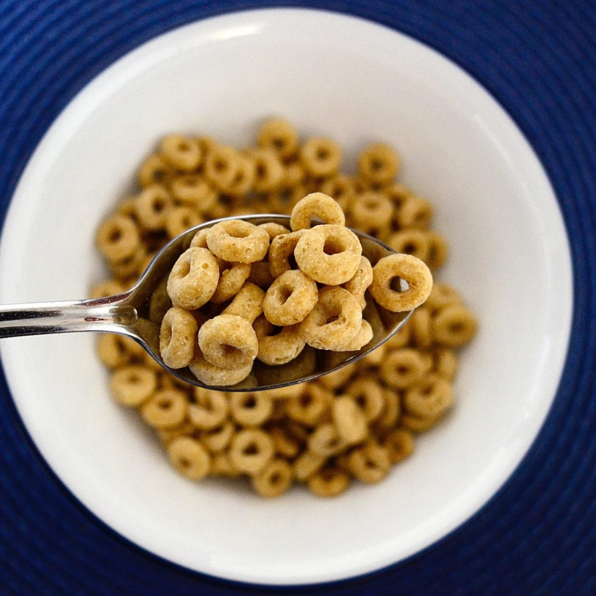

Cereal

This is one of the most famous dishes you will have the opportunity to prepare many times on your life, its called cereal and there are a ton of them.
I think is made of weat or something, some or them are colorful, too sweet and addictive, but also, some of them are healty, nitritious and tasteless tbh.
You can just go to the any store and ask for your favourite. And there's just 2 Ingredients!!!.
Ingredients:
- Cereal
- Milk (the type you like in the amount you wish)
Steps
- First put on some cereal in your mf bowl
- Pour as many milk as you like whit the cereal
- Add toping if you want
- There you go dumbass